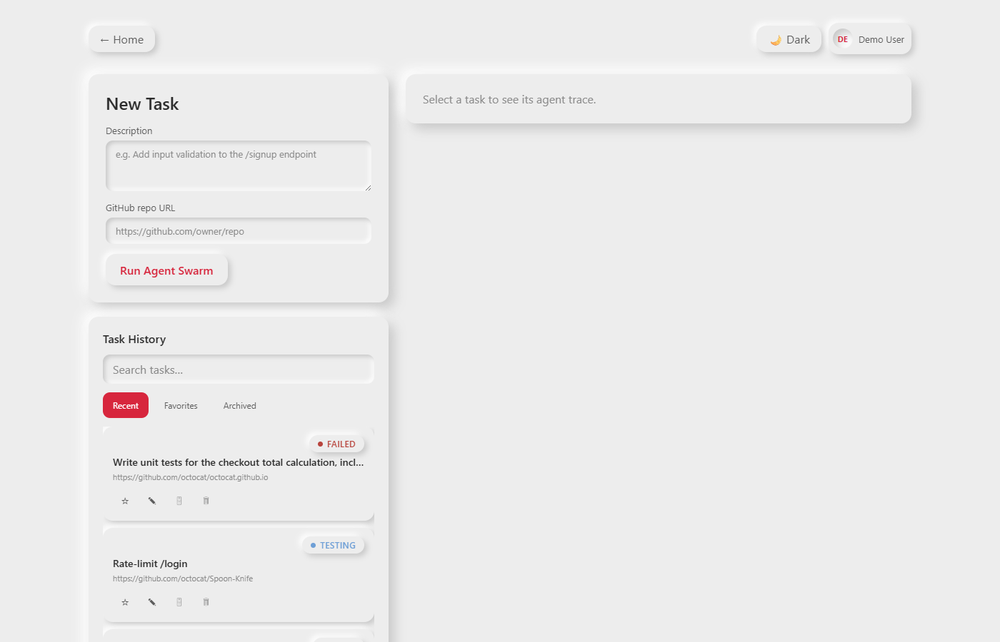
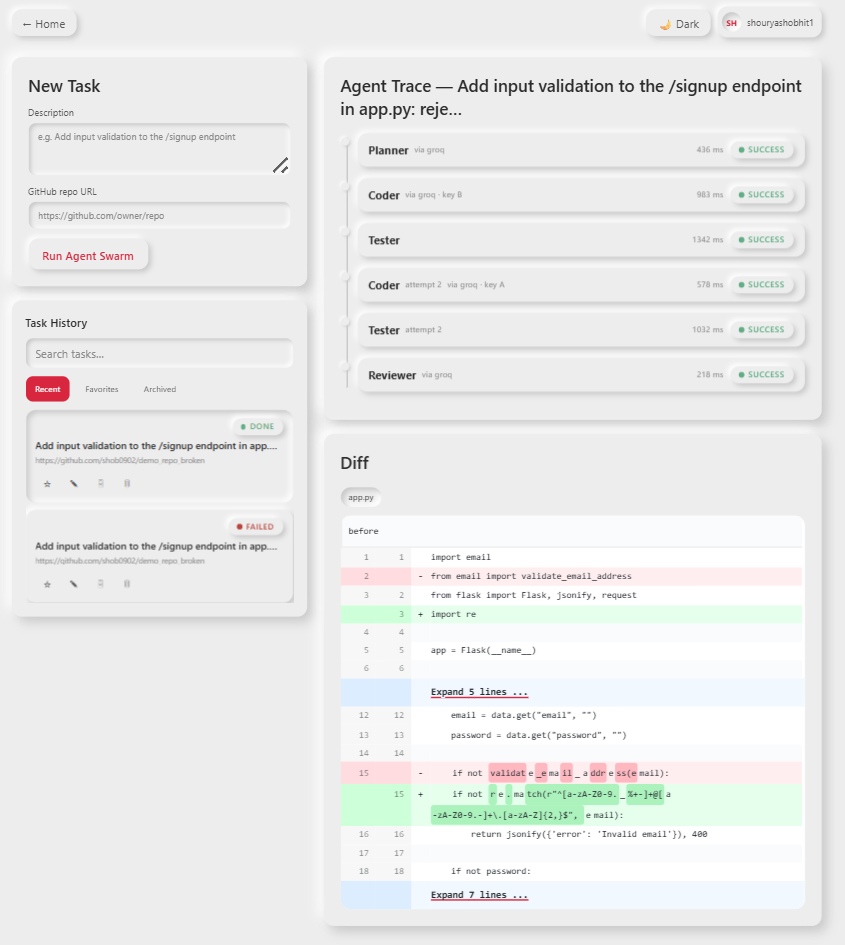
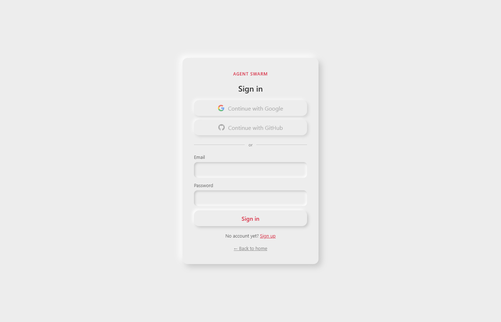

7. Screenshots




Agent Swarm automates a coding task the way a small engineering team would divide it up — except every "team member" is a specialized agent, and the whole exchange is logged. You sign in with a private account, then give it a plain-English task description and the URL of a public GitHub repository. From there, four cooperating agents take over:
If the tests fail, the Coder gets another shot — with the actual failure output as context — up to a bounded number of retries, instead of looping forever or silently giving up. A React dashboard polls the backend and renders all of this as a live timeline (the Agent Trace), plus a diff viewer for exactly what the Coder changed.
Every task, run, and diff belongs to exactly one account and is invisible to everyone else — this is now a genuine multi-tenant product, not a single-user local tool: sign in with Google, GitHub, or email/password, and a Task History sidebar (searchable, with favorite/rename/archive/delete) keeps every past run one click away, the same shape as ChatGPT's or Claude's conversation history.
This is a portfolio project built to demonstrate multi-agent orchestration end-to-end: a real Planner → Coder → Tester → Reviewer loop, backed by an async task pipeline, sandboxed execution, and observability by default — rather than a single LLM call dressed up as "agentic."
| Layer | Technology | Role |
|---|---|---|
| Backend / API | Django 5 + Django REST Framework | Task/AgentRun models, REST endpoints, free admin audit-trail UI |
| Async pipeline | Celery + Redis | Runs the Planner→Coder→Tester→Reviewer chain off the request thread; Redis is both the broker and result backend |
| Database | SQLite (dev) | Standard Django ORM only — no SQLite-only features — so it's a config change away from Postgres |
| Sandbox | Docker, via the docker Python SDK | One ephemeral, network-disabled container per Coder-write / Tester run |
| Planner LLM | Groq (Llama 3.1 8B Instant), one dedicated key | Repo-wide reasoning and task decomposition into a step plan |
| Coder LLM | Groq, two dedicated keys | Whole-file rewrites, given the plan + relevant file contents + prior test failures — rotates least-recently-used-first between its two keys, with a per-key cooldown on rate limits and failover (Section 3) |
| Tester | pytest / npm test (no LLM) | Deterministic pass/fail inside the sandbox |
| Reviewer LLM | Groq (Llama 3.1 8B Instant), one dedicated key | Fast, bounded "does this diff match the plan" check |
| Auth | django-allauth + dj-rest-auth + djangorestframework-simplejwt | Google/GitHub OAuth, email/password, JWT issuance — not hand-rolled |
| Frontend | React 18 + Vite + React Router | Task submission, live Agent Trace timeline, diff viewer, auth pages, task history |
| Diff rendering | react-diff-viewer-continued | Renders the Coder's before/after per file |
| Styling | Custom neumorphic CSS (light + dark) | Soft-UI theme driven entirely by CSS custom properties, mobile-first breakpoints |
Every LLM-backed agent runs on Groq. This is a deliberate design choice, not an API bolted on at random — and it's a revision of an earlier one: the pipeline originally split work across Google Gemini (Planner/Coder) and Groq (Reviewer), until Gemini's free tier turned out to be capped per Google Cloud project rather than per key. See the constraints callout below.
pytest exit code and output is strictly more trustworthy than asking a model to "judge" whether tests passed.
All provider calls go through one abstraction, agents/llm_client.py's
call_llm(provider, messages, api_key), so swapping which provider or key an
agent uses is a one-line change — not a rewrite. The provider argument is kept even
though only Groq is wired up today: AgentRun.provider records it per run, and adding a
second provider back means adding one _call_* function plus one dispatch entry, not
touching four agent modules. api_key is always passed in explicitly by the caller; the
client module has no notion of a single global key. It also centralizes the free-tier handling every
agent needs: exponential backoff with jitter on 429s, capped at 3 retries, then surfaced as a
distinct LLMRateLimitError so callers can tell "this key is out of quota" apart from
"this request was bad."
Each agent role gets its own dedicated key rather than one shared Groq key across the whole pipeline, so a role that burns through its quota can't starve the others:
| Role | Env var | Keys |
|---|---|---|
| Planner | GROQ_API_KEY_PLANNER | 1 |
| Coder (slot A) | GROQ_API_KEY_CODER_A | 2 |
| Coder (slot B) | GROQ_API_KEY_CODER_B | |
| Reviewer | GROQ_API_KEY_REVIEWER | 1 |
| Tester | — | 0 (no LLM) |
Implemented in agents/services/key_pool.py, which the Coder consults on every call:
MAX_TEST_RETRIES times in a row.call_llm's full backoff cycle against a key already known to be out of quota. A success clears the penalty. A non-429 failure — bad key, malformed request, transient 5xx — gets a much shorter 15s bench instead: enough to prefer the sibling on the next call, without writing off what might have been a single blip.
Why LRU rather than a plain alternate-by-attempt-number counter. A fixed counter
keeps sending every even attempt to key A even when A is known to be rate-limited, wasting a full
backoff cycle before failing over — every single time. LRU plus cooldown skips the dead key outright,
and it self-corrects: the key that got skipped is the stalest one once its cooldown expires, so it's
picked first and the load re-balances on its own instead of staying permanently lopsided. Recency is
tracked with a pool-wide counter rather than a timestamp, because time.monotonic()'s
~15ms resolution on Windows makes two nearby calls read as equally recent — which ties the
comparison and silently collapses the rotation onto one key.
Pool state is per-process and in-memory, which under celery -P solo (what this project
documents on Windows) is exactly one pool shared by every pipeline run. Under a multi-process worker
each process keeps its own view — still correct, just less well-informed; moving the pool to Redis is
the upgrade path, and nothing outside key_pool.py would change.
AgentRun.output["key_slot"] records which key actually served a run — the Agent Trace
surfaces it as via groq · key A — and ["keys_tried"] keeps the full attempt
list regardless of outcome, so a silent failover stays visible after the fact instead of looking
like a clean first-try success.
The most common way this pipeline fails in practice is not a bad plan or bad code — it's the model breaking the output contract. Two layers handle that:
parse_strict_json tolerates chatter, not corruption (services/common.py). Every prompt says "strict JSON only, no prose, no fences", and an 8B model mostly complies; when it doesn't, the response is usually still salvageable. It locates the first JSON value and uses raw_decode, which stops at the end of that value rather than demanding the whole string be consumed — handling leading prose, ```json fences, and the one that actually bit: anything after the JSON, where plain json.loads throws away a perfectly good response with Extra data: line 2 column 1. Genuinely truncated or corrupt output is still rejected.MAX_MALFORMED_RETRIES, default 2). A response that stops mid-string is transient rather than deterministic — the same prompt against the same repo produced clean JSON on one call and a response truncated at 2051 characters on the next, with Groq reporting finish_reason="stop" both times, so there is nothing to detect up front. Without a re-ask a single such response aborts the whole run, because tasks.py only loops the Coder back around when the Tester rejects the code — never when the Coder produced no usable code at all. Each re-ask carries a short corrective note (deliberately not the bad output: re-sending multiple KB of half-escaped file content would blow the token ceiling and turn a recoverable blip into a hard 413) and naturally lands on the other API key, since the pool hands out least-recently-used first.
The Coder also de-duplicates repeated paths in the files list, keeping the last entry.
A model that emits app.py twice would otherwise have that file written twice, with the
second file_diffs entry capturing the first rewrite as its "before" — a phantom diff
between two generated versions rather than against the real original.
Both of these surfaced with live keys, and between them they shaped the whole provider setup:
llama-3.1-8b-instant free tier caps at ~6000 tokens/minute, combined prompt + completion, per request — the single biggest constraint on this pipeline. Requesting max_output_tokens=16384 fails every single time with a 413 ("Request too large … Limit 6000, Requested 18269"): the output-token ask alone exceeds the ceiling before the prompt is even counted. So every agent reserves only what its output actually needs, leaving the rest of the budget for its prompt — Coder 3000 (_CODER_MAX_OUTPUT_TOKENS), Planner 1500 (MAX_PLAN_OUTPUT_TOKENS; its prompt carries the repo file tree), Reviewer 1024 (MAX_REVIEW_OUTPUT_TOKENS; its prompt carries 6000 chars of diff). A response that still gets truncated comes back as finish_reason=length, which llm_client.py raises as an explicit token-budget error rather than letting it surface downstream as a baffling JSON parse failure.quotaId: GenerateRequestsPerDayPerProjectPerModel-FreeTier, limit: 20 requests/day. Two API keys issued from the same Google account under the same project share that one 20/day pool — they do not double it, and AI Studio's default "quick create" flow reuses the same project every time. 20 requests/day doesn't survive normal development on a pipeline that can make four Coder calls in a single run. Groq's per-key limits, by contrast, are genuinely independent per key — which is what makes the two-key Coder rotation worth anything at all.
This combination gets a lot for free that a leaner stack would have to build by hand. The
Django admin doubles as a zero-extra-frontend audit trail for every Task and
AgentRun — genuinely useful for debugging a multi-step agent pipeline, not just a
scaffold artifact. Celery is the standard way to move a multi-minute, multi-API-call pipeline
off the HTTP request/response cycle, and Redis serving as both the broker and result backend
keeps the infrastructure to a single extra service in dev.
Executing LLM-generated code is the one place in this project where isolation is non-negotiable.
Every Coder-written file is exercised inside a throwaway container with network_disabled=True,
a memory cap, and an enforced timeout — the generated code cannot reach the network, exhaust the
host, or hang the pipeline. A plain subprocess call would not give any of those guarantees.
The Coder agent outputs strict JSON — {"files": [{"path", "content"}]} — with the
complete new content of each file it touches, rather than a unified diff. LLM-generated unified
diffs are fragile to parse: a single off-by-one context line breaks git apply outright.
Whole-file rewrites are trivial to validate and apply safely (including a path-traversal check
before anything touches disk). A real git diff is then computed after the
files are written, so the Reviewer prompt and the frontend's diff viewer still see a proper diff —
the model just never has to produce one directly.
The dashboard's job is to make an asynchronous, multi-minute pipeline legible in real time. Plain polling (every 2–3 seconds) gets that job done with a fraction of the complexity of a WebSocket layer, and it's what actually shipped for v1 — Django Channels remains a clearly-scoped stretch goal rather than a requirement the demo depends on.
OAuth's code-exchange flow, CSRF/state handling, and per-provider quirks (Google vs. GitHub have
different token and profile-fetch shapes) are exactly the kind of security-critical, easy-to-get-
subtly-wrong code worth not writing from scratch. django-allauth already implements all
of it, tested across a huge number of real deployments; dj-rest-auth wraps it in a JSON
API instead of allauth's default server-rendered pages, which is what an SPA needs.
The access and refresh tokens are delivered as httpOnly, SameSite=Lax
cookies — never handed to page JavaScript, never touching localStorage. This closes off
the most common JWT footgun (an XSS payload reading a token out of storage and exfiltrating it) at
essentially no extra cost, since dj-rest-auth supports this mode natively. The frontend
never sees or manages a token at all; it just sends requests with withCredentials: true
and lets the browser do the rest.
POST /api/tasks/ and enqueued as a Celery job; the worker shallow-clones the repo into a throwaway temp directory.git diff is computed immediately after.pytest by default). Exit code and output are parsed — no model involved.MAX_TEST_RETRIES (default 3) attempts, before the task is marked failed.{"approved", "concerns"}.done. Every stage's full input/output — including the raw LLM response — is already sitting in the database.
done. The
two-key rotation is visible too: attempt 1 was served by key B and the
retry by key A, exactly the least-recently-used ordering described in Section 3. The diff
below the trace is a genuine git diff computed from the clone, not model-generated —
here the Coder replaced a hallucinated email-module import with a stdlib
re pattern.
Every agent invocation creates an AgentRun row before it calls the LLM or the
sandbox (status pending), and updates it afterward — success or exception — so a crashed
agent is always visible in the trace, never silently missing. Every stage's raw LLM response is
persisted to AgentRun.output, so a failure can be diagnosed from the database without
re-calling the API. All of this is visible two ways: the React dashboard's live Agent Trace, and the
Django admin (/admin/), which needed zero extra frontend work to become a full audit log.
| Model | Key fields |
|---|---|
| User accounts app | email (unique, login identity), name, avatar_url, signup_provider, role, date_joined — no username field at all |
| Task | user (FK, ownership), title, description, github_url, status (pending → planning → coding → testing → review → done/failed), is_favorite, is_archived |
| AgentRun | task (FK), agent_type, provider, input_context, output, status, retry_count, duration_ms |
AgentRun deliberately has no user_id of its own — ownership is enforced
transitively through AgentRun.task.user, its existing FK relationship. Duplicating the
owner onto every child table would just be redundant, driftable state; every query that needs to
check "is this mine" already goes through the one Task.user column.
Every account is private: signing in is required before any task can be created, and every API endpoint only ever returns data owned by the caller. This section covers how accounts work and how isolation is enforced.
backend/.env.example and frontend/.env.example document exactly
what to create and where). Until then, the buttons render disabled with a tooltip rather than
pretending to work.SocialAccountAdapter
connects the new login to the existing account instead of erroring or creating a duplicate.
The backend issues a short-lived JWT access token and a longer-lived refresh token, both as
httpOnly cookies (see Section 3 for why). The frontend's axios client sends
withCredentials: true on every request; on a 401 it silently calls the
refresh endpoint once and retries the original request before giving up and redirecting to
/login. Logging out blacklists the refresh token server-side, not just clears the cookie,
so a stolen-but-unused refresh token can't be replayed after logout.
Every Task list endpoint filters to request.user's own rows only — another
user's tasks are never even considered, let alone returned. Reaching for a specific task/run by id
that belongs to someone else returns 403 Forbidden, not a 404 — Django REST
Framework's default object-permission behavior once an IsOwner permission class is
wired in, so no special-casing was needed to meet that requirement. All of this sits behind a
global default of IsAuthenticated, so a new endpoint is private by default and has to
opt out, not the other way around.
The sidebar (previously a flat task list) now supports free-text search over title/description, three filters (Recent / Favorites / Archived), inline rename, a favorite/pin toggle, archive (reversible, hides from "Recent"), and delete (permanent, confirmed). All of it is scoped to the signed-in user the same way task creation is.

docker compose up -d
python:3.11-slim alone has no test runner, and the sandbox has no network access at run time to install one.
cd backend docker build -t agent-swarm-sandbox:latest -f docker/sandbox.Dockerfile .
cd backend
python -m venv venv
venv\Scripts\activate
pip install -r requirements.txt
copy .env.example .env REM then fill in the four GROQ_API_KEY_* vars (Section 3)
REM (GOOGLE/GITHUB_CLIENT_ID+SECRET optional -- see Section 5)
python manage.py migrate
python manage.py createsuperuser REM optional: gives you /admin/ access
python manage.py test_llm REM optional: tests each of the four API keys individually
python manage.py runserver
-P solo)
celery -A orchestrator worker --loglevel=info -P solo
cd frontend npm install copy .env.example .env REM optional: VITE_GOOGLE_CLIENT_ID / VITE_GITHUB_CLIENT_ID npm run devOpen the URL Vite prints — by default
http://localhost:5173.
Sign up (email/password is enough) — you'll land on the dashboard. A ready-made target repo ships
in demo_repo/: a tiny Flask app whose /signup endpoint has no validation,
with tests that fail against it. Push that folder to a public GitHub repo of your own (tasks now take
a github_url, not a local path — Section 4's Coder note explains why), then submit:
Description:
Add input validation to the /signup endpoint: reject requests with an invalid email format or a
missing password with a 400 response.
GitHub repo URL:
https://github.com/<you>/demo_repo
Watch the Agent Trace go Planner → Coder → Tester → Reviewer and land on done. It'll show
up in the Task History sidebar afterward — searchable, favoritable, renameable — right where you'd
expect it in a ChatGPT/Claude-style history list.
'docker' is not recognized in PowerShell — a per-user Docker Desktop install doesn't always add itself to PATH. Use the full path once (C:\Users\<you>\AppData\Local\Programs\DockerDesktop\resources\bin\docker.exe), or add that folder to your user PATH permanently and reopen the terminal.npm run dev process holding port 5173, pushing your actual tab onto 5174/5175, which the backend's CORS_ALLOWED_ORIGINS doesn't trust. Close stray dev-server terminals, or widen the allow-list in backend/.env..env only at startup — restart runserver after editing it.CLIENT_ID/CLIENT_SECRET values are set in both backend/.env and frontend/.env (Section 5). Email/password isn't affected.

github_url per taskrole exists on the User model as a future-facing hook, not an enforced permission tier today